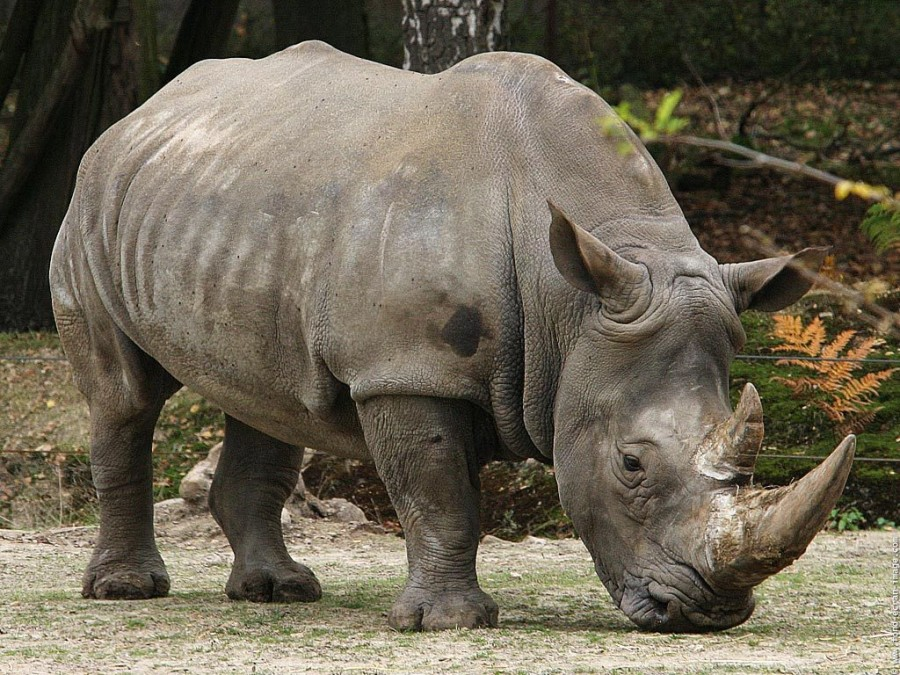

Badak Sumatera atau Badak Bercula Dua merupakan spesies badak paling langka di dunia bersama dengan badak jawa. Badak jenis ini merupakan yang paling kecil dari spesies badak saat ini. Badak Sumatera merupakan binatang yang soliter. Habitat badak sumatera adalah di wilayah dalam dari hutan gunung yang belantara di wilayah Malaysia, Indonesia (Pulau Sumatera), dan kemungkinan juga Myanmar. Makanan badak sumatera antara lain buah, ranting, daun, dan semak-semak. So, mereka adalah binatang herbivora. Seperti kebanyakan jenis badak lainnya, badak sumatera juga memiliki indera penciuman dan pendengaran yang sangat tajam. Mereka akan meninggalkan semacam bau yang dapat dilacak di seisi hutan yang dapat digunakan untuk menemukan lokasi badak lainnya. Sebagai spesies badak terkecil, badak sumatera memiliki berat sekitar 800 kg, dan dapat tumbuh hingga setinggi 1,5 m diukur dari pundak, dengan panjang sekitar 2,5 hingga 3,2 m. Badak Sumatera memiliki 2 tanduk. Panjang tanduk utama bisa tumbuh mencapai 79 cm, sedangkan tanduk sekundernya hanya tumbuh hingga sekitar 10 cm. Tanduk ini adalah senjata pertahanan dari sang badak. Ironisnya, justru karena tanduk inilah badak jadi diburu oleh manusia untuk diambil tanduknya. Tanduk badak ini diburu untuk digunakan sebagai bahan baku obat tradisional di China, Taiwan, Hongkong, dan Singapura. Tanduk badak ini juga berharga di Timur Tengah, khususnya Yaman, dan Afrika Utara untuk digunakan sebagai aksesoris gagang belati. Saat ini populasi badak Sumatera berada pada status "Kritis (CR)" menurut data Redlist IUCN. Diperkirakan hanya ada sekitar 400 badak sumatera yang saat ini masih ada. Sayangnya kebanyakan badak-badak sumatera yang tinggal di penangkaran atau kebun binatang sangat susah untuk bisa berkembang biak. Pada tahun 2001, untuk pertama kalinya seekor anak badak sumatera lahir di kebun binatang Cincinnati, Ohio, Amerika Serikat. Dan merupakan persalinan yang tersukses dalam rentang waktu 100 tahun.